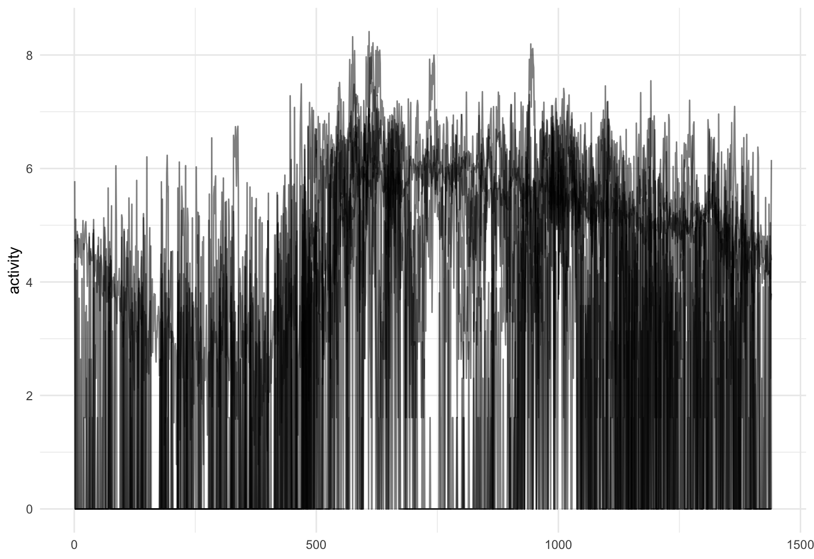
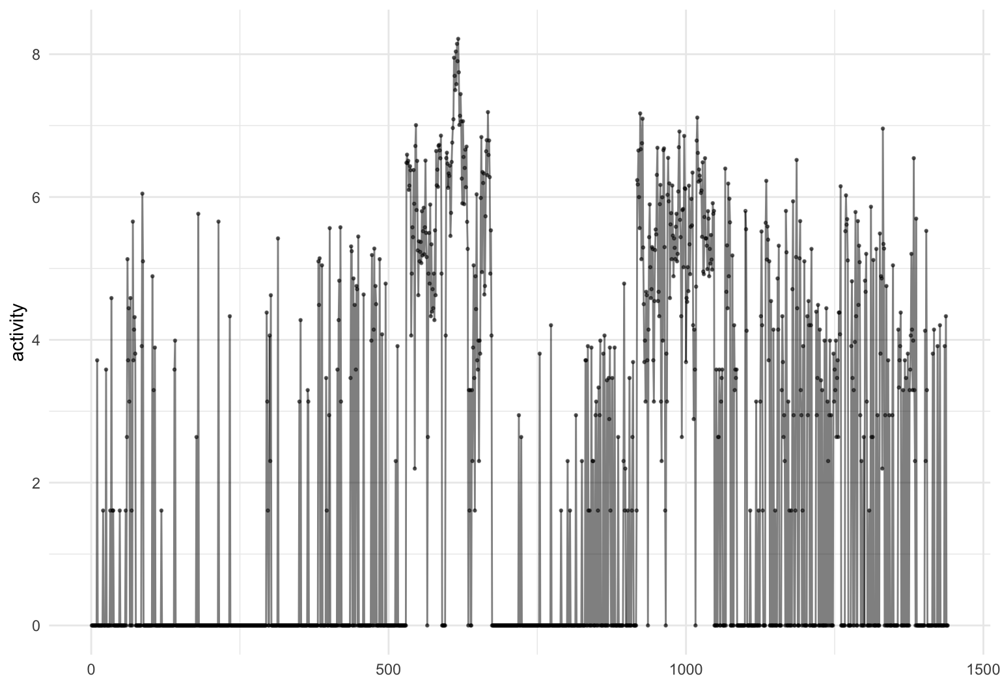
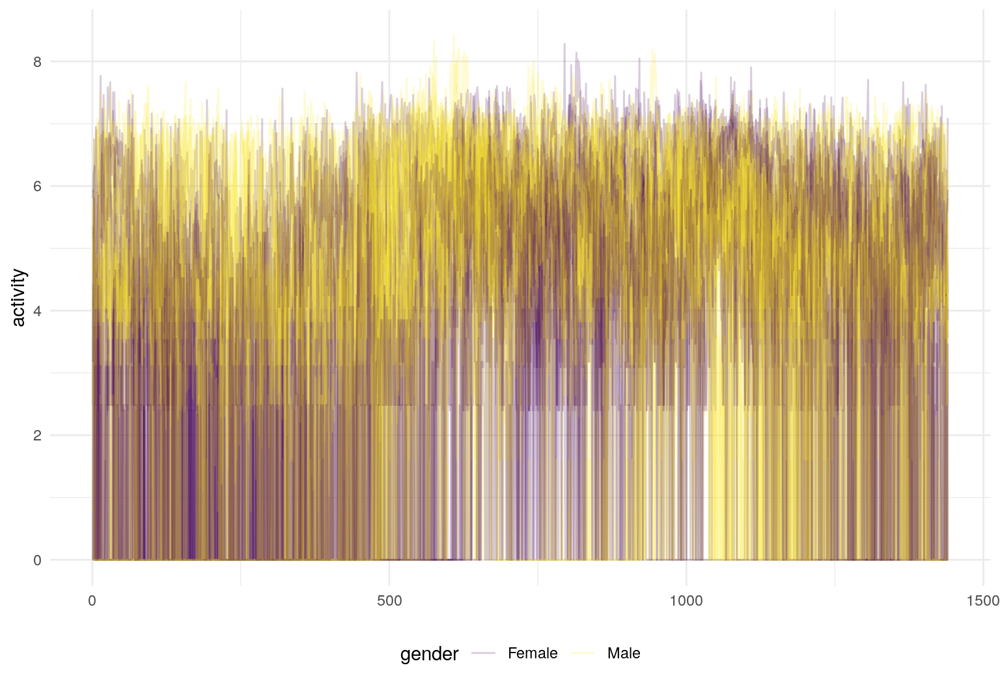
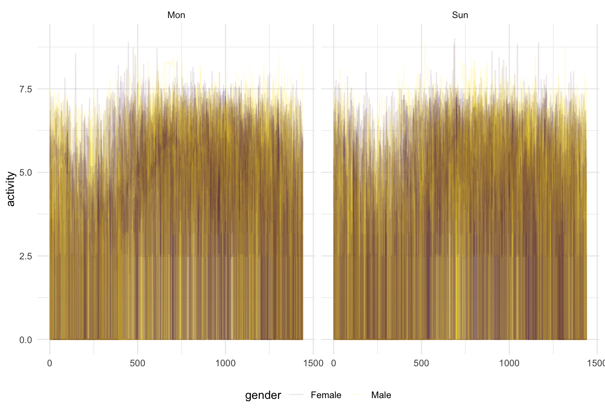
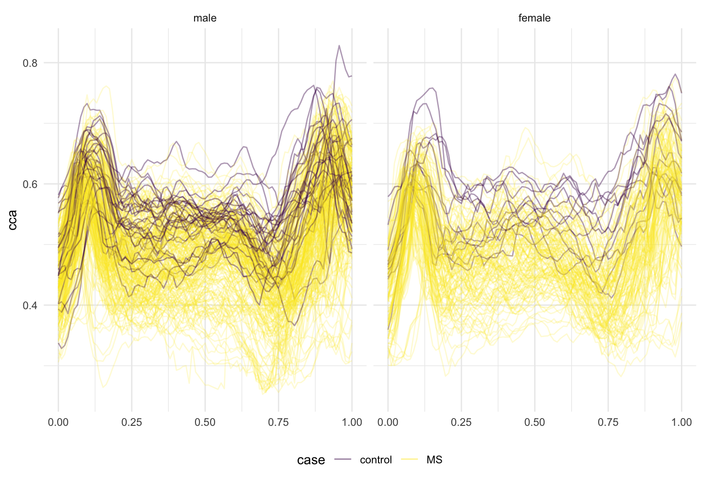
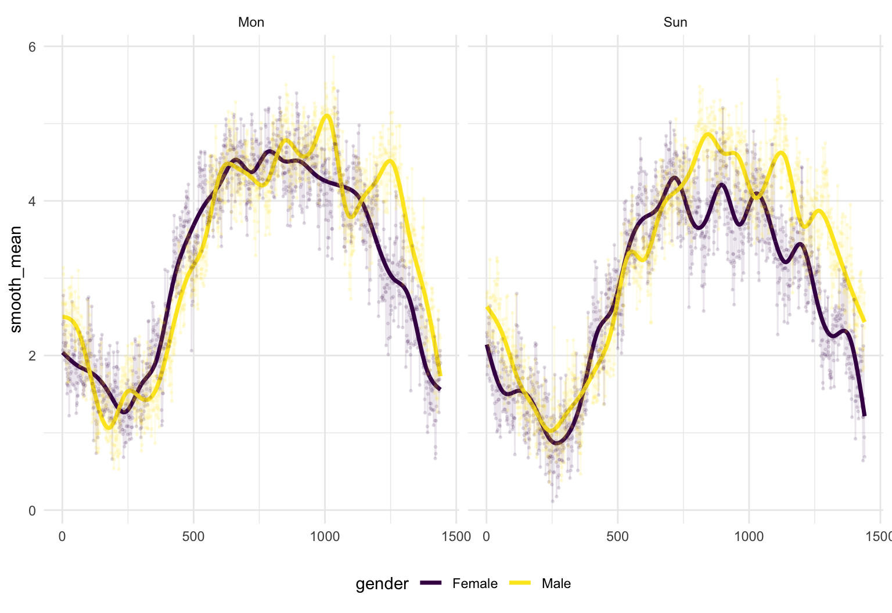
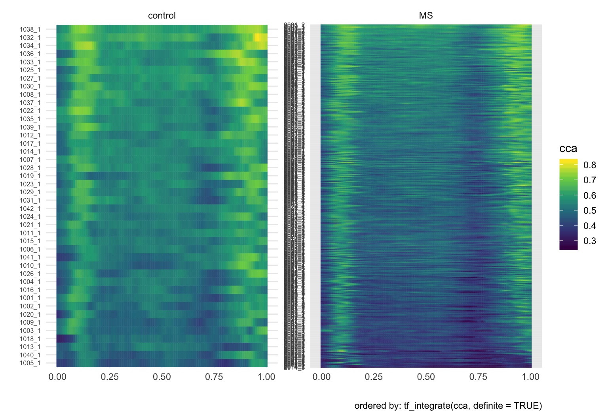
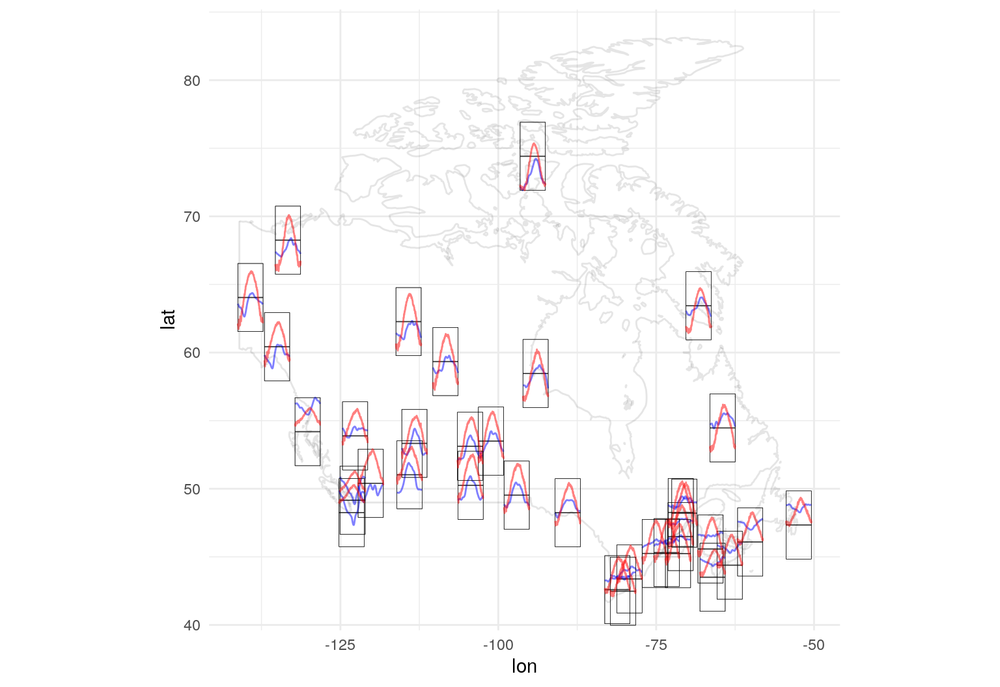
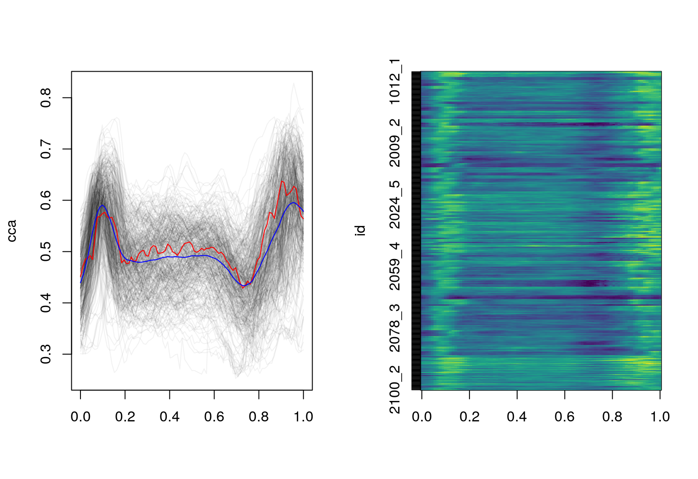
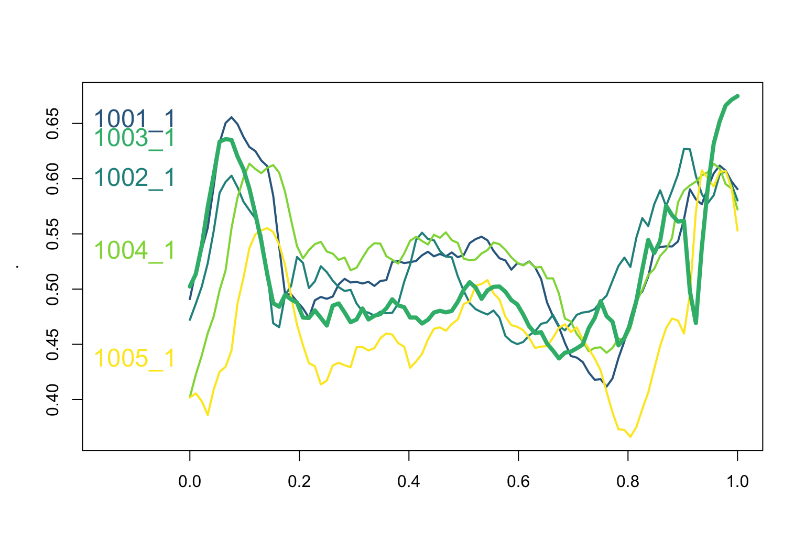

Visualization
Jeff Goldsmith
2020-05-09
Source:vignettes/x04_Visualization.Rmd
x04_Visualization.RmdThe tidyfun package is designed to facilitate functional data analysis in R, with particular emphasis on compatibility with the tidyverse. In this vignette, we illustrate data visualization using tidyfun.
We’ll draw on tidyfun::chf_df and tidyfun::dti_df, as well as the fda::CanadianWeather data.
Plotting with ggplot
ggplot is a powerful framework for visualization. In this section, we’ll assume some basic familiarity with the package; if you’re new to ggplot, this primer may be helpful.
tidyfun includes Pasta-themed geoms and plots with for functional data:
-
geom_spaghettifor lines -
geom_meatballsfor (lines &) points -
gglasagnawithorder-arguments to sort the lasagna layers -
geom_capellinifor little sparklines / glyphs on maps etc.
geom_spaghetti and geom_meatballs
One of the most fundamental plots for functional data is the spaghetti plot, which is implemented in tidyfun + ggplot through geom_spaghetti:
chf_df %>% filter(id == 1) %>% ggplot(aes(y = activity)) + geom_spaghetti()

A variant on the spaghetti plot is the meatballs plot, which shows both the “noodles” (i.e. functional observations visualized as curves) and the “meatballs” (i.e. original data visualized as points).
chf_df %>% filter(id == 1, day == "Mon") %>% ggplot(aes(y = activity)) + geom_meatballs()

Using with other ggplot features
The new geoms in tidyfun “play nicely” with standard ggplot aesthetics and options.
You can, for example, define the color aesthetic for plots of tf variables using other observations:
chf_df %>% filter(id %in% 1:5) %>% ggplot(aes(y = activity, color = gender)) + geom_spaghetti(alpha = .2)

You can also use facetting:
chf_df %>% filter(day %in% c("Mon", "Sun")) %>% ggplot(aes(y = activity, color = gender)) + geom_spaghetti(alpha = .1) + facet_grid(~ day)

Another example, using the DTI data, is below.
dti_df %>% ggplot() + geom_spaghetti(aes(y = cca, col = case, alpha = .2 + .4*(case == "control"))) + facet_wrap(~ sex) + scale_alpha(guide = 'none', range = c(.2, .4))

Together with data manipulation tools, the integration with ggplot can produce useful exploratory analyses:
chf_df %>% group_by(gender, day) %>% summarize(mean_act = mean(activity)) %>% mutate(smooth_mean = tfb(mean_act)) %>% filter(day %in% c("Mon", "Sun")) %>% ggplot(aes(y = smooth_mean, color = gender)) + geom_spaghetti(size = 1.25, alpha = 1) + geom_meatballs(aes(y = mean_act), alpha = .1) + facet_grid(~ day) ## Percentage of input data variability preserved in basis representation ## (per functional observation, approximate): ## Min. 1st Qu. Median Mean 3rd Qu. Max. ## 88.70 91.35 92.00 91.56 92.25 93.00 ## Percentage of input data variability preserved in basis representation ## (per functional observation, approximate): ## Min. 1st Qu. Median Mean 3rd Qu. Max. ## 89.00 91.80 93.00 92.14 93.05 93.30

gglasagna
Lasagna plots are “a saucy alternative to spaghetti plosts”. They are a variant on a heatmaps which show functional observations in rows and use color to illustrate values taken at different arguments.
In tidyfun, lasagna plots are implemented through gglasagna. A first example, using the CHF data, is below.
chf_df %>% filter(day %in% c("Mon", "Sun")) %>% gglasagna(activity) ## Warning: `data_frame()` is deprecated as of tibble 1.1.0. ## Please use `tibble()` instead. ## This warning is displayed once every 8 hours. ## Call `lifecycle::last_warnings()` to see where this warning was generated.

A somewhat more involved example, demonstrating the order argument and taking advantage of facetting, is next.
dti_df %>% gglasagna( y = cca, order = tf_integrate(cca, definite = TRUE), arg = seq(0,1, l = 101)) + theme(axis.text.y = element_text(size = 6)) + facet_wrap(~ case, ncol = 2, scales = "free")

geom_capellini
To illustrate gemo_capellini, we’ll start with some data prep for the iconic Canadian Weather data:
canada <- data.frame( place = fda::CanadianWeather$place, region = fda::CanadianWeather$region, lat = fda::CanadianWeather$coordinates[,1], lon = -fda::CanadianWeather$coordinates[,2], region = fda::CanadianWeather$region) canada$temp <- tfd(t(fda::CanadianWeather$dailyAv[,,1]), arg = 1:365) canada$precipl10 <- tfd(t(fda::CanadianWeather$dailyAv[,,3]), arg = 1:365) %>% tf_smooth ## using f = 0.15 as smoother span for lowess canada_map <- data.frame(maps::map("world", "Canada", plot = FALSE)[c("x", "y")])
Now we can plot a map of Canada with annual temperature averages in red, precipitation in blue:
ggplot(canada, aes(x = lon, y = lat)) + geom_capellini(aes(tf = precipl10), width = 4, height = 5, colour = "blue", line.linetype = 1) + geom_capellini(aes(tf = temp), width = 4, height = 5, colour = "red", line.linetype = 1) + geom_path(data = canada_map, aes(x = x, y = y), alpha = .1) + coord_quickmap()

Plotting with base R
tidyfun includes several extensions of base R graphics, which operate on tf vectors. For example, one can use plot to create either spaghetti or lasagna plots, and lines to add lines to an existing plot:
cca = dti_df$cca %>% tfd(arg = seq(0, 1, l = 93), interpolate = TRUE) layout(t(1:2)) plot(cca, type = "spaghetti") lines(c(median(cca), mean = mean(cca)), col = c(2, 4)) plot(cca, type = "lasagna", col = viridis(50))

The plot functions use options and can be edited in ways that are similar to other base graphics.
cca_five = cca[1:5] cca_five %>% plot(xlim = c(-0.15, 1), col = pal_5, lwd = 2) text(x = -.1, y = cca_five[,0.07], labels = names(cca_five), col = pal_5, cex = 1.5) median(cca_five) %>% lines(col = pal_5[3], lwd = 4)
